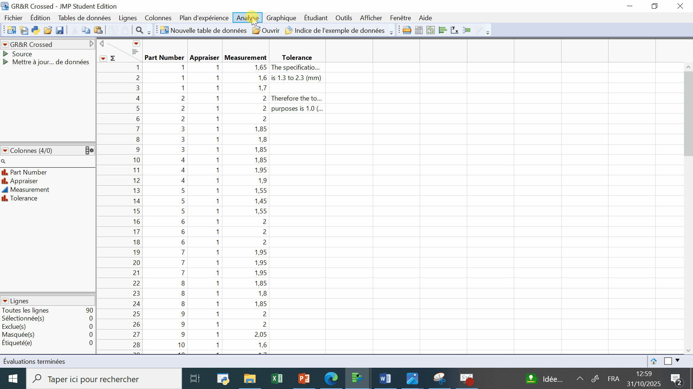
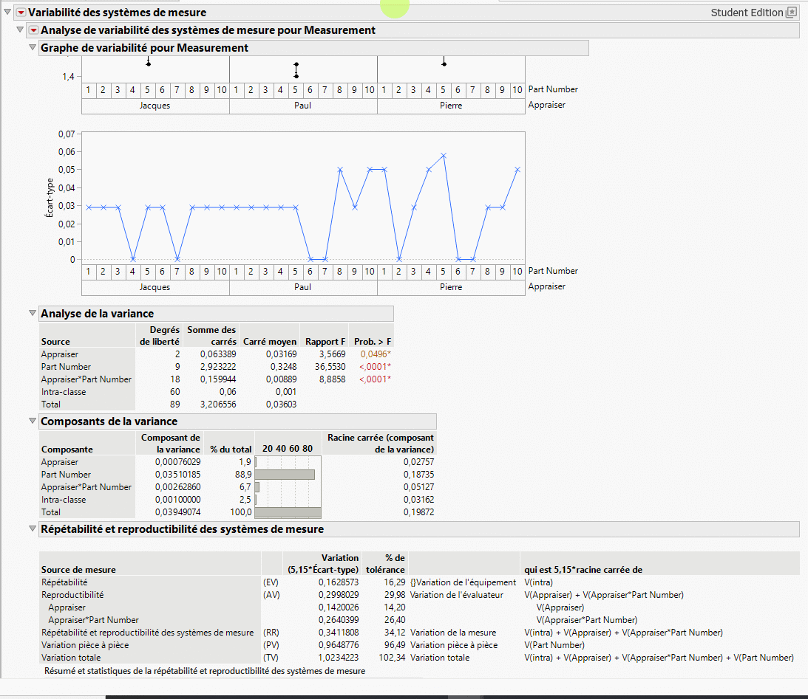

Procédure 04 · Système de mesure
Étude Gage R&R croisée (données continues)
Procédure pas à pas
- Préparer une colonne pour la pièce, une pour l’opérateur et une pour la mesure.
- Ouvrir Analyse → Qualité et procédés → Analyse des systèmes de mesure.
- Choisir Gage R&R comme méthode MSA.
- Choisir le modèle croisé lorsque tous les opérateurs mesurent toutes les pièces.
- Affecter Measurement à Y, Part number à ID pièce, Appraiser à X / Groupement.
- Vérifier que la mesure est continue et que l’identifiant de pièce est catégoriel.
- Paramétrer le multiplicateur sigma et, si nécessaire, la largeur de tolérance.
- Valider, puis ouvrir les options du rapport avec le triangle rouge pour afficher l’étude Gage R&R et les composantes de variance.
Télécharger les données pour JMP
Ouvrir ce fichier dans JMP, puis suivre les étapes de la procédure et les animations associées.
↓ Télécharger GR&R-Crossed.XLSFormat .XLS ; fichier d’exercice original, sans modification.
Jeu de données / résultat
Fichier cité : GR&R Crossed.xls
Point de vigilance : La valeur 5,15 du multiplicateur sigma dans le support correspond à une convention ; ne pas la confondre avec la valeur par défaut de 6.
Démonstrations animées dans JMP
Animations extraites du PowerPoint « Lean Six Sigma avec JMP 003 ». Elles complètent les étapes numérotées ci-dessus.

